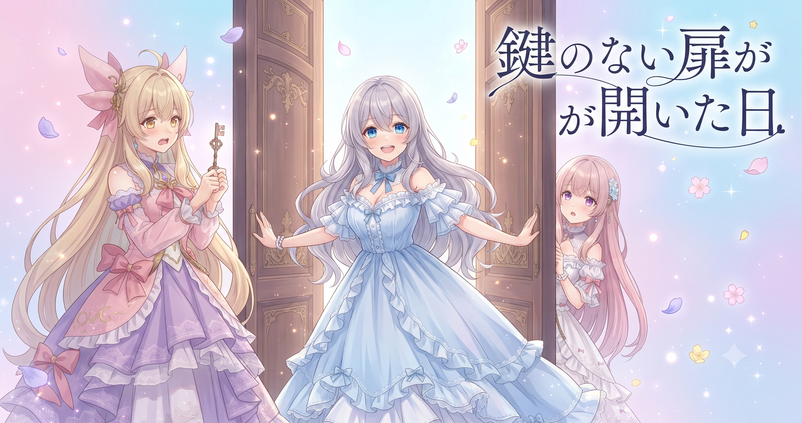
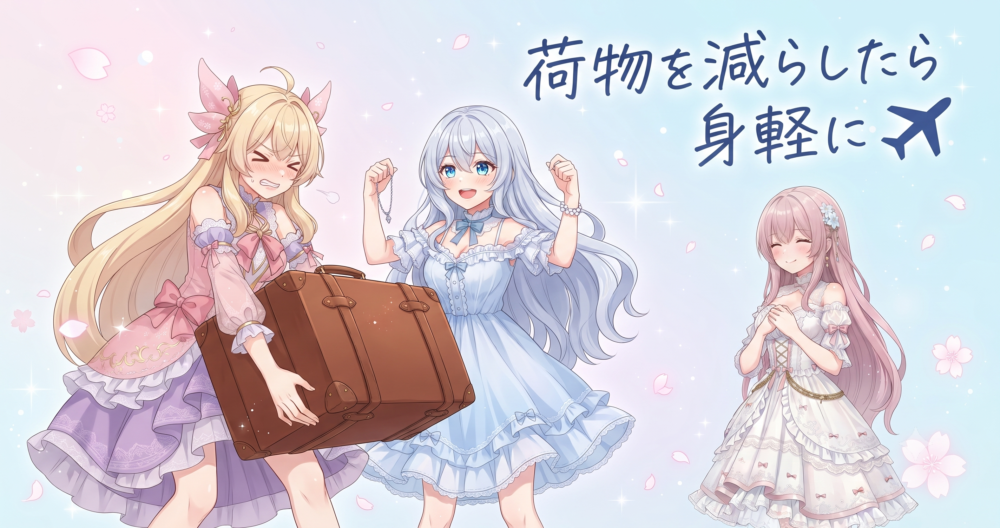
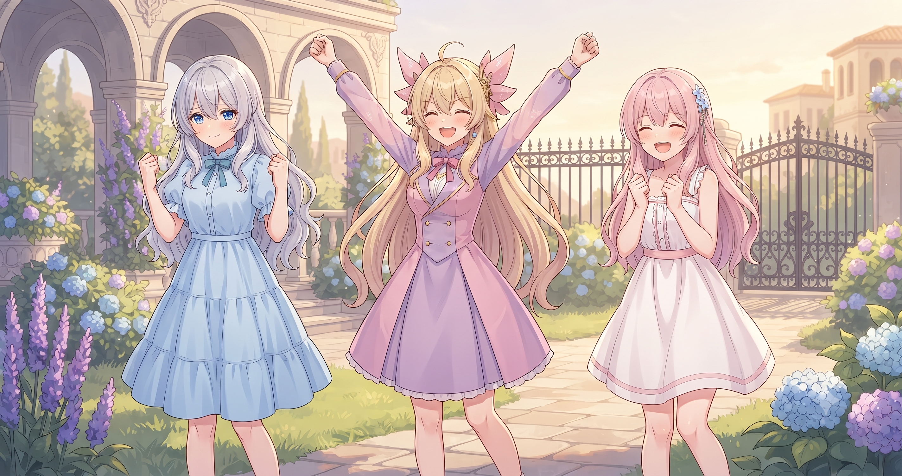
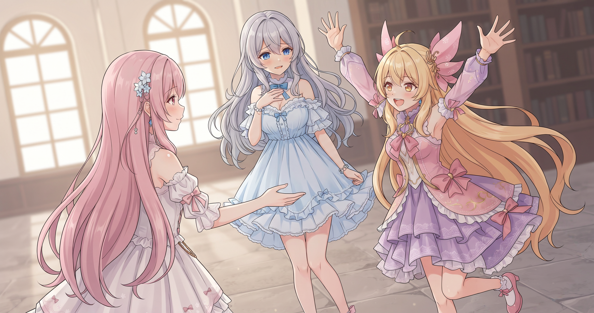

📌 3行まとめ
- ギャラリーページから準備中ゲートと管理者専用機能を取り除き、誰でもアクセスできる通常の公開ページとして正式オープンした
- サイトのデプロイデータを2.5GBから約1.4GBへ削減し、公開に必要な実体だけを送る形に整理した
- ブログv3の第3弾リライトが完了し、挿絵・サムネとも欠番3日を除くほぼ全日分が出揃った
ルピナス （笑顔）
昨日の大改装で『もうちょっとで形になる』って感じてたんだけど、今日はその『もうちょっと』を全部やりきった日でした。みなさんこんにちは、ルピナスです！
アイリス （大笑い）
あたしさ、『終わった！』って叫びたい瞬間を何日も待ってたんだけど……今日また来た気がする。これ何回目？
フィオナ （笑顔）
第1弾、第2弾と来て……今日で第3弾最終章ですね。ちゃんと終わりが来ました！
ルピナス （ドヤ顔）
ギャラリーを正式公開して、サイトを軽量化して、記事の仕上げを全部終えた——今日は三段重ねでやりきった日です。いくよ！
1. 🖼️ ギャラリー、ついに「正式オープン」

サイトのギャラリーページには、これまで『準備中』を示すゲートが張られており、中を見るには特別なアクセスが必要な状態になっていた。今日、そのゲートを完全に取り除き、誰でも直接アクセスできる通常の公開ページとして生まれ変わった。パスワード認証・管理者モードといった一時的な保護機能はすべて撤去し、コードもすっきり整理した。
フィオナ （びっくり）
ギャラリーページを確認しようといつも通りアクセスしたら……あれ、そのままするっと入れてしまいました。
アイリス （衝撃）
え！？鍵がなくなってる!?
ルピナス （大笑い）
なくなってるんじゃなくて、今日外したの！
アイリス （考え中）
じゃあ今まであたしたちって……毎回ちゃんとログインして確認してたってこと？
フィオナ （照れ）
してましたね……律儀に、毎回。
ルピナス （ふつう）
準備中のゲートがあったのは、まだ掲載する画像を整えてる途中だったから。それが全部揃ったので、今日めでたく開放です。
アイリス （笑顔）
何回もくぐってた合言葉入りの裏口が、急に正面玄関になった感じ！ちょっと変な感覚！
ルピナス （呆れ）
そこまで大げさな話じゃないから！準備ができたから扉を開けただけ。
フィオナ （ウインク）
でも毎回鍵を使っていた身としては、確かに感覚は少し変わりますよね（笑）
📝 ポイント（初心者向け解説・技術メモ・まとめ）
- 「準備中」のゲートって何？→お店でいうと『本日は準備中です🚪』の貼り紙みたいなもの。完成するまで来ても見られないようにしておいて、準備が整ったらスッと外す仕組み
- 技術メモ：仮認証・管理者フラグ・平文パスワードをすべて削除し、通常の静的公開ページとして整理。不要な保護コードを除いたことでメンテナンス性も向上
- ひとことまとめ：準備中ゲートを外して、ギャラリーがやっと完全公開になった
2. ⚡ サイトを半分の重さにした日

サイトをデプロイ（公開処理）するとき、これまでは本来不要なブログ記事のソースファイルなども一緒に梱包して送ってしまっていた。今日それを整理し、『公開に必要な実体だけ』を送るように変更。結果、2.5GB近くあったデプロイデータが約1.4GBまで減った。
アイリス （ふつう）
旅行の荷造りってさ、『一応持っていこうかな』ってやってくうちに気づいたらパンパンになるよね。
ルピナス （大笑い）
今日のサイトの話、まさにそれだから。
フィオナ （ふつう）
ブログ記事のソースファイルなど、サイトを動かすのに実際は必要なかったものが全部まとめて入っていたんです。
アイリス （衝撃）
使わない荷物をカバンに全部詰め込んで旅行してたってこと!?
ルピナス （ドヤ顔）
そういうこと。今日『これ持っていかなくていいじゃん』って整理したら……2.5GBが約1.4GBになりました！
アイリス （びっくり）
半分近く減った！それ荷物どんだけ入れてたの！
フィオナ （笑顔）
デプロイが速くなるし、管理もしやすくなる——一石二鳥どころか三鳥くらいですね。
アイリス （にやり）
感動……なんだけど、最初から入れなきゃよかったんじゃ？
ルピナス （怒り）
そこはうるさい！！気づいたとき直せばいいの！
フィオナ （ウインク）
気づいて直せた、それが大事ですよ（小声）
📝 ポイント（初心者向け解説・技術メモ・まとめ）
- サイトの「デプロイ」って何？→旅行の荷造りと輸送みたいなもの✈️。余計な荷物を減らすと速く届いて、向こうでの扱いも楽になる
- 技術メモ：GitHub Pagesのartifactからブログ記事のソースディレクトリを除外し、ビルド済みの公開実体だけを成果物とすることで約2.5GB→約1.4GBに圧縮
- ひとことまとめ：必要なものだけ送る、それだけでデータが半分近くになった
3. 📝 第3弾リライト完走！全日分コンプリート

ブログv3の改装作業、今日で第3弾にして最終章を終えた。第1弾・第2弾と積み上げてきたリライトが、今日ついに全日分——欠番3日を除くほぼ全てのページ——に挿絵とサムネが揃った。
ルピナス （笑顔）
第3弾、終わりました！
アイリス （大笑い）
やった〜〜！！！
フィオナ （笑顔）
欠番の3日分を除いて、全部揃いましたね……本当に長い道のりでした。
アイリス （考え中）
その欠番3日って……もう忘れることにしていい感じ？
ルピナス （ふつう）
忘れません。いつか埋めます。
アイリス （衝撃）
え、まだやるの!?
フィオナ （ウインク）
やる方向で……ですよね、お姉ちゃん。
ルピナス （ドヤ顔）
やる方向。ただし今日じゃない。今日は50日近い分が全部挿絵とサムネ付きで並んでること、まずそれを喜んでほしい。
フィオナ （笑顔）
壮観ですよ……ずらっと揃っていると、達成感が全然違います。
アイリス （笑顔）
あたしたちの歴史が全部並んでる〜！感動！
ルピナス （ふつう）
画像も一通り見直したから、見た目も揃ってるはず。
フィオナ （ふつう）
以前は記事ごとにばらつきがありましたが、並べる印象が全然違います。
アイリス （笑顔）
それ職人の仕事って感じ！地味だけど絶対気づく人は気づく〜！
ルピナス （大笑い）
ありがとう。そういうこと言ってくれると、やった甲斐がある。
📝 ポイント（初心者向け解説・技術メモ・まとめ）
- 挿絵・サムネが全量揃うと、記事一覧を並べたときの一体感が全然違う
- 技術メモ：挿絵・サムネ全量生成で50日近い記事の見た目を統一。欠番3日分は別途対応予定
- ひとことまとめ：第3弾でほぼ全量コンプリート。積み上げ型の改装作業がひとまず完結
4. 🎁 お楽しみコーナー：三姉妹の相談室「一区切りついた後、次に何を優先する？」

ルピナス （ドヤ顔）
今日は相談室コーナー！お便り風にいくよ——『大きな作業が一区切りついたとき、次に何を優先すればいいか分からなくなります。三姉妹はどう決めてますか？』という相談、来たことにします。
アイリス （笑顔）
あたしは『残ってる気になること』から潰す派！今日の話でいうと欠番3日、あれずっと気になってるでしょ？
ルピナス （ふつう）
気になってる。忘れてないよ、いつか埋める。
フィオナ （ふつう）
わたしは、達成感があるうちに次の小さい一歩を決めてしまう派です。区切りのあとって気が抜けて、そのまま何もしなくなりがちなので。
アイリス （にやり）
フィオナ、真面目か！でもそれ大事だよね。
ルピナス （考え中）
私は今日みたいに『三段重ねで終わった日』は、まず休む。次の優先順位は明日の自分に決めてもらう。
アイリス （びっくり）
それただの先送りじゃ……いや、休むのも大事か。
フィオナ （笑顔）
三人三様の答えになりましたね。みなさんは一区切りついたあと、次の一歩をどうやって決めていますか？ぜひコメントで教えてください！
アイリス （笑顔）
サイトがここまで整ったし、次はまた新しいAIイラストの話もどんどんしていきたいな〜！
ルピナス （ウインク）
同感。サイト仕事が一段落したら、そっちの手もまた動かしていきたいね。
5. 💐 今日のまとめ
- ギャラリーページが通常公開になった——準備中ゲートを外せたらゴール、これでみんな気軽に見に来られる
- デプロイデータが2.5GBから約1.4GBへ——『必要なものだけ送る』を徹底したらサイトが身軽になった
- ブログv3リライトがほぼ全日分コンプリート——挿絵・サムネが全部揃って、サイトが一気に完成形に近づいた
みんなは、荷物やデータを整理してみたら想像以上にスッキリした、っていう経験ある？
💬 コメント
お名前とコメントだけで送れるよ（承認されるとみんなに表示されます🌸）
コメントを読み込み中…